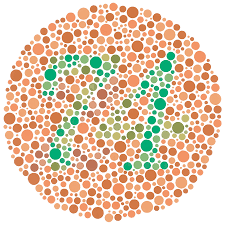
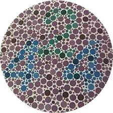
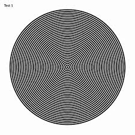

1. Visual Acuity Test
Stand 3-4 meters away from the screen and try reading each line below. Cover one eye at a time.
E
F P
T O Z
L P E D
P E C F D
E D F C Z P
F E L O P Z D
2. Color Blindness Test
Can you read the numbers in these images?


If you cannot see the numbers, you may want to consult an eye specialist.
3. Astigmatism Test
Do all lines appear equally dark and sharp?
If some lines appear blurrier than others, you may have astigmatism.